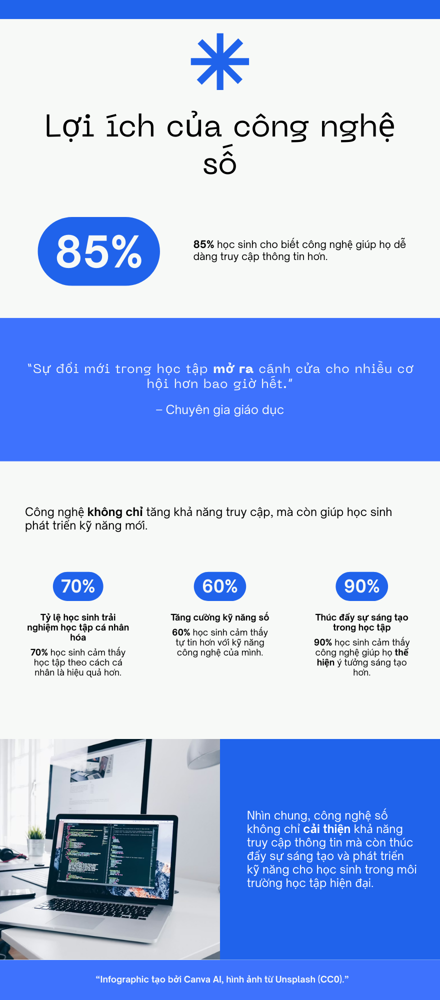

Lợi ích của công nghệ số — Infographic & Video
Công nghệ số mang lại nhiều lợi ích trong học tập, giúp người học tiếp cận kiến thức một cách nhanh chóng và linh hoạt. Nhờ các nền tảng học trực tuyến và tài nguyên số, việc học không còn bị giới hạn bởi không gian và thời gian. Bên cạnh đó, công nghệ số còn tăng tính tương tác và hỗ trợ người học nâng cao hiệu quả tự học.
